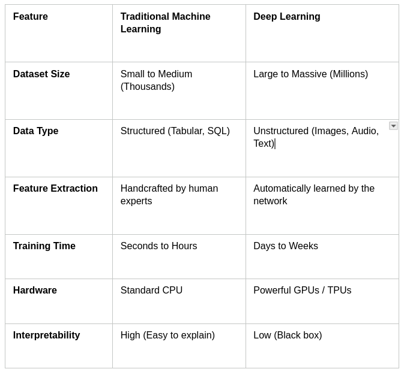

How ML/AI Works—A Foundation
Last updated on 2026-07-07 | Edit this page
Estimated time: 75 minutes
Overview
Questions
- “If Traditional ML requires humans to pick the variables and Deep Learning finds them automatically, which one do you think clinicians trust more right now, and why?”
- “If a deep learning model is 99% accurate at predicting a stroke but cannot explain why it made that choice, would you comfortably use it on a patient?”
Objectives
- Explain how computers process diverse healthcare data streams (images, notes, waves).
- Clearly contrast traditional machine learning (rules-based/checklists) with deep learning (pattern-recognition).
- Define the concept of a “black box” model and why it matters in medicine.
What a Computer Sees
Core Concept
To understand how a computer interprets medical data, we must contrast it with the perspective of a medical professional. For instance, when a radiologist analyzes an X-ray, they rely on clinical experience and anatomical knowledge to detect abnormalities or identify changes across a patient’s historical imaging. Similarly, a physician can review an Electronic Health Record (EHR) timeline to track a patient’s decline and predict potential diagnoses. In contrast, computers are entirely blind to these clinical contexts; they process data strictly as arrays of binary code. The core challenge, therefore, lies in translating these complex medical concepts into a structured format that a machine can interpret and learn from.
Medical Data Forms & Mathematical Realities
To begin, we will examine how computers interpret and process various data modalities.
Images (Spatial Grids)
When a radiologist views a chest X-ray, they interpret a continuous landscape of varying brightness. These grayscale gradients tell a physiological story: dense structures like bone block X-rays and appear bright white, air-filled lungs allow rays to pass through and appear dark, and soft tissues occupy the gray spaces in between. Humans effortlessly synthesize these shades into an understanding of anatomical structures and potential pathology.
A computer, however, possesses no intrinsic concept of “anatomy,” “brightness,” or “shadow.” To a machine, a chest X-ray is flattened into a two-dimensional grid called a pixel matrix. If it is a standard grayscale medical image, each individual pixel is assigned a numerical value typically ranging from 0 (pure black) to 255 (pure white) in an 8-bit system, or up to 4095 in higher-resolution 12-bit medical imaging (DICOM format).
Therefore, where a human sees a lung nodule, the computer simply registers a localized cluster of higher numerical values relative to the lower numbers surrounding it. The challenge of computer vision in radiology is training algorithms to recognize these mathematical patterns and map them to clinical realities.
 .
.
Text & EHR (Tokenisation & Vectors)
A significant portion of medical data consists of textual information, such as clinical notes and metadata descriptions. The challenge is that computers cannot inherently understand text. While we could theoretically encode words alphabetically (e.g., assigning a=1, b=2, so “acute” becomes \([1, 3, 21, 20, 5]\)), this approach fails in practice. Most machine learning models require input data to be of a fixed length, and this method creates variable-length vectors. Furthermore, it provides the machine with zero semantic understanding of the words.
To solve this, Natural Language Processing (NLP) uses tokenization alongside vector embeddings. Tokenization breaks the text down into smaller, manageable units (tokens), which are then converted into dense mathematical vectors. Positioned within a high-dimensional mathematical space, these vectors group similar medical concepts close together, allowing the machine to grasp the relationships between words.
 .
.
Signals (Frequencies Over Time)
Continuous bioelectrical signals, such as Electrocardiograms (ECGs) and Electroencephalograms (EEGs), originate as analog waveforms reflecting the heart’s electrical conduction or the brain’s postsynaptic potentials. To process these signals computationally, they must undergo analog-to-digital conversion (ADC). This process samples the continuous wave at uniform intervals—often thousands of times per second (measured in Hertz) capturing rapid fluctuations in amplitude and frequency.
However, a computer possesses no innate understanding of a “waveform” or its physiological significance. To the machine, the entire biological phenomenon is reduced to a one-dimensional array of floating-point numbers representing voltage amplitudes at discrete time steps. The core challenge in bio-signal machine learning is developing algorithms that can reconstruct the underlying physiological features—such as an R-peak in an ECG or an alpha wave in an EEG solely from this raw, sequential numerical data.
 .
.
Discussion
What form is your data in? what does a computer see?
Traditional Machine Learning
Core Concept
You are likely familiar with deep learning, the driving force behind most current AI research. While powerful, it can be incredibly complex and ill-suited for certain problems, a challenge we will explore later. Before deep learning dominated the field, we relied on traditional machine learning. These foundational methods use defined mathematical rules to analyse and separate data, making them highly interpretable, transparent, and straightforward to implement. These mathematical rules usually cater to a person’s known knowledge and leverages it.
The Engineering Reality: Feature Engineering
In traditional ML, humans must do the heavy lifting of extraction. We use our clinical knowledge to define the exact metrics, called features, that the model is allowed to look at. E.g. like rules.
- Example: To predict diabetes risk, a human programmer must explicitly extract columns for Age, BMI, and HbA1c.
- The Catch: If a critical piece of data (like a sudden change in a patient’s sleep pattern) is hidden in the raw medical record but wasn’t engineered into a data column by the developers, the model has zero capacity to notice it.
Examples of Core Architecture Reference
The table below displays some example ML and how standard clinical inputs map to traditional algorithms.
 .
.
Logistic Regression
The Starting Point: The Linear Formula
Logistic regression starts out exactly like standard linear regression (the classic line of best fit). It assigns a specific weight (or importance) to each of your clinical inputs. Let’s say we want to predict the risk of a patient being readmitted to the hospital based on two features: Age and Number of Prior Admissions. The model builds an equation that looks like this:
Log-Odds-Value \(= \beta_0+ (\beta_1.Age) + ( \beta_2. Prior-admissions)\)
- \(\beta_0\) is the baseline starting point (the intercept).
- \(\beta_1\) and \(\beta_2\) are the weights the model learns during training. If prior admissions are a massive risk factor, \(\beta_2\) will be a large positive number.
The Problem
If a patient is 80 years old and has 10 prior admissions, this linear math might spit out a raw score of +45.2. If a patient is young and healthy, it might spit out -12.4. A score of 45.2 doesn’t make sense as a probability. We need a way to squash that infinite line down into a strict bracket between 0 and 1.
The Sigmoid Function
To turn that raw score into a probability, logistic regression passes the result through a mathematical curve called the Sigmoid (logistic) function. The mathematical formula for the sigmoid curve is:
\(S(z) = \frac{1}{1+ e^{-z}}\)
Where z is the raw log-odds score from our linear equation. No matter how massive, tiny, positive, or negative the score z is, plugging it into this function forces the output to bend into an S-shaped curve that never goes below 0 and never goes above 1.
- If the raw score is a huge positive number, the output squashes tightly up against 1.0 (100% probability).
- If the raw score is a huge negative number, the output drops tightly down to 0.0 (0% probability).
- If the raw score is exactly 0, the output lands perfectly at 0.5 (50% probability).
Making the Decision: The Threshold
Once the sigmoid function outputs a probability (e.g., 0.74), the model applies a classification threshold—usually set at 0.5 (50%) by default—to make a final decision:
 .
.
Clinical Nuance
In medicine, we rarely stick to the default 0.5 threshold. If we are screening for a deadly disease, we want to catch everyone. We might lower the threshold to 0.2 (20%). This makes the model highly sensitive, flagging patients even if there is only a 20% chance they are sick, ensuring we don’t miss a critical diagnosis.
 .
.
Decision Trees
At its core, a Decision Tree works exactly like a flowchart. It breaks down a complex database of patients into smaller, cleaner groups by asking a series of yes-or-no questions based on the data. It is one of the most transparent algorithms in machine learning because you can follow the exact path the model took to reach its final diagnosis.
The Anatomy of a Tree
Before looking at how a tree is built, it helps to understand its structure using standard terminology:
 .
.
- Root Node: The single master question at the very top that splits the entire patient dataset into two initial groups.
- Internal / Decision Nodes: Subsequent questions that continue to branch out based on previous answers.
- Leaf Nodes: The end of the road. These nodes contain the final prediction (e.g., “High Risk of ICU Admission” or “Low Risk”). A leaf node doesn’t split any further.
How the Tree Chooses its Questions
A human clinician builds a flowchart based on guidelines (like ACLS protocols). A Decision Tree, however, builds its flowchart by calculating math metrics directly from your raw data.
The model’s goal is to create pure leaf nodes—meaning nodes where almost 100% of the patients inside share the same outcome. To do this, it scans every single variable in your dataset (Age, Blood Pressure, Troponin levels, etc.) and tries out every possible split to find the one that reduces chaos the most.
The mathematical engine driving this is usually Gini Impurity or Information Gain (Entropy).
A Conceptual Example: Predicting Heart Attacks
Imagine a dataset of 100 patients. 50 had a heart attack (+) and 50 did not (-). The dataset is currently 50/50, completely “impure.” The algorithm evaluates two potential options for its very first split (the Root Node):
Option A: Split by Age (>65)
- Left branch (>65): 40 patients (30 had a heart attack, 10 did not) (Somewhat cleaner)
- Right branch (≤65): 60 patients (20 had a heart attack, 40 did not) (Somewhat cleaner)
Option B: Split by Troponin Levels (Elevated vs. Normal)
- Left branch (Elevated): 48 patients (46 had a heart attack, 2 did not) (Highly Pure!)
- Right branch (Normal): 52 patients (4 had a heart attack, 48 did not) (Highly Pure!)
The Decision Tree calculates the mathematical impurity score for both options. Because Option B creates much cleaner, more definitive groups, the algorithm chooses Troponin Levels as its root node question. It then repeats this exact calculation for the next sub-branches.
Stopping the Growth: The Danger of Overfitting
If left completely alone, a decision tree will keep asking questions until every single leaf node is 100% pure even if it means creating a specific branch for a single outlier patient (e.g., “If Age is 42, AND Troponin is normal, AND the patient has a tattoo of a dolphin, then they are at risk”). This fatal flaw is called Overfitting. The model memorises the training data perfectly but fails when applied to new patients because it mistook random noise for a real clinical trend.
How We Fix It
To keep a tree accurate and generalizable, data scientists use two primary techniques:
- Pre-Pruning (Setting Max Depth): Limiting how tall the tree can grow. For example, telling the algorithm: “You are only allowed to ask a maximum of 4 nested questions.”
- Post-Pruning: Letting the tree grow completely wild, and then cutting away branches that provide very little statistical value.
 .
.
Random Forest
If an individual Decision Tree is like asking a single doctor for an opinion, a Random Forest is like gathering a panel of 500 diverse specialists, letting them look at different parts of the patient’s record, and taking a majority vote. It is designed specifically to fix the biggest flaw of individual decision trees: their extreme instability and tendency to memorise noise (overfit). Here is the exact mechanics of how a Random Forest builds its democratic system.
The Core Strategy: Ensemble Learning
Random Forest is an ensemble method—meaning it combines multiple weak or unstable models into one highly accurate, stable framework. It achieves this using a dual strategy called Bagging and Feature Randomness. If you simply built 500 trees on the exact same dataset, they would all choose the exact same questions and give you identical answers. To create a true “forest,” every single tree must be intentionally forced to see the world a little differently.
 .
.
Step 1: Bootstrapping (Row Randomness)
Imagine you have a master clinical trial dataset of 1,000 patients. Before building Tree #1, the algorithm takes a random sample of 1,000 patients with replacement (meaning the same patient can be picked more than once, and some patients won’t be picked at all).
- Tree 1 gets an altered variation of the dataset.
- Tree 2 gets a completely different random shuffle.
This data-shuffling technique is called Bootstrapping. It ensures that no single outlier patient can skew the entire forest, because that outlier will only appear in a fraction of the trees.
Step 2: Random Subsets of Features (Column Randomness)
This is where the magic happens. In a standard decision tree, the algorithm searches through every single variable in the dataset to find the absolute best question to ask. In a Random Forest, at every single branch split, the tree is intentionally blinded. It is only allowed to choose from a random subset of features (typically the square root of the total number of features available). Why this is crucial:
- Imagine you have a dataset predicting cardiac risk, and Troponin Level is an incredibly dominant variable.
- If you don’t restrict the features, every single tree will pick Troponin Level as its very first question at the top of the tree. The trees will all look highly similar.
- By forcing feature randomness, some trees will be blocked from seeing Troponin entirely. They are forced to build logic using secondary predictors, like Blood Pressure, Family History, or ECG Segment Shifts.
- This uncovers hidden multi-variable interactions that a single dominant variable would normally overshadow.
Step 3: Aggregation (The Majority Vote)
Once the forest is grown (usually consisting of 100 to 500 deep, unpruned trees), a new patient arrives in the clinic. The patient’s data is run down every single tree in the forest simultaneously.
- For Classification (e.g., Sepsis vs. No Sepsis): If 400 trees vote “Sepsis Risk” and 100 trees vote “Low Risk,” the final output of the forest is Sepsis Risk (by an 80% majority vote).
- For Regression (e.g., Predicting length of hospital stay): The forest averages the outputs. If Tree 1 says 3 days, Tree 2 says 5 days, and Tree 3 says 4 days, the final prediction is 4 days.
 .
.
Discussion
What do you think is the benefits/disadvantages of tranditional machine learning?
Deep Learning & Neural Networks
Core Concept
“Now let’s step away from the checklist. Think of a seasoned attending clinician who walks up to a complex pathology slide, glances at it, and immediately feels uneasy. They might say, ‘I can’t point to a single checklist item, but based on the thousands of cases I’ve seen over twenty years, this looks suspicious.’ That is Deep Learning.”
The Shift: Representation Learning
Instead of a human hand-selecting the variables, deep learning utilises neural networks to ingest raw data (like an unparsed pathology image or raw audio) and discover the features entirely on its own.
How Information Flows Through a Network
Information moves sequentially through distinct structural layers:
- Input Layer: Receives the raw numbers (e.g., raw pixel intensities of a dermatology image).
- Hidden Layers: The magic happens here. The early layers find incredibly simple patterns like raw edges or sharp contrasts.
- Middle layers stitch those edges into textures and basic shapes. Late hidden layers combine those shapes into complex structures (e.g., asymmetrical lesion borders or irregular cell nuclei).
- Output Layer: Delivers the final clinical prediction (e.g., “94% probability of Malignant Melanoma”).
 .
.
How they learn
At its core, a neural network learns through a process of trial, error, and adjustment. Think of it like a person learning to shoot a basketball: they take a shot, see how far off they were, and adjust their form for the next attempt.
1. The Guess (Forward Propagation)
The network is given some input data (for example, an image of a cat). It passes this information through layers of interconnected mathematical “neurons.”
Each connection has a weight (which determines how important that connection is) and a bias (an extra offset). The network multiplies the input data by these weights, adds the biases, and makes a prediction—for instance, guessing there is a \(60\%\) chance the image is a dog.
2. Measuring the Error (The Loss Function)
Next, the network compares its guess to the actual truth (the correct label, which is “cat”).
It uses a mathematical formula called a loss function to calculate exactly how wrong it was. A high loss means the guess was terrible; a low loss means it was very close.
3. Finding the Blame (Backpropagation)
Once the error is calculated, the network works backward from the output layer to the input layer. It uses calculus (specifically, gradients) to figure out exactly which weights and biases contributed most to the mistake.
In simple terms: It calculates, “If I change this specific weight by a tiny amount, will the error go up or down?”
4. Making the Adjustment (Gradient Descent)
Finally, an optimization algorithm (the most common is called Gradient Descent) tweaks the weights and biases in the direction that reduces the error.
The network doesn’t change everything all at once. It takes a tiny, controlled step—governed by a setting called the learning rate—to avoid overcorrecting.
Model Types Matched to Medical Data
Core Concept
“Just like you wouldn’t use a stethoscope to check a reflex, we don’t use the same AI model architecture for every clinical problem. We match the math structure to the data shape.”
The Healthcare AI Toolkit
Computer Vision via Convolutional Neural Networks (CNNs) - Best For: Spatial data where the relationship between neighbouring pixels matters (X-rays, MRIs, CT scans, dermatology photos). - How it works: It slides small mathematical filters across an image to identify shapes and abnormalities regardless of where they appear on the scan.
Convolutional Neural Networks (CNNs)
- CNNs process data like images by passing a small filter (or kernel) across the input space to detect localized features like edges, textures, and shapes.
- This process uses shared weights, meaning the same filter is applied across the entire input, vastly reducing the number of parameters compared to fully connected networks.
- Through pooling layers, CNNs downsample the data to achieve translation invariance, allowing them to recognize an object no matter where it appears in the frame.
- They build a spatial hierarchy, where early layers detect simple features (lines) and deeper layers combine them into complex concepts (faces or objects).
- The core inductive bias of a CNN is locality, operating on the strict assumption that neighboring pixels or data points are highly correlated.
 .
.
Transformer Networks
- Transformers process entire sequences simultaneously rather than step-by-step, completely eliminating the need for recurrent loops (like RNNs or LSTMs).
- They rely on a self-attention mechanism to mathematically score and weight the relationship between every single element in a sequence, regardless of how far apart they are.
- Because they lack an inherent sense of order, they use positional encodings added to the input embeddings to retain information about the sequence structure.
- They capture global context dynamically, allowing the network to understand the meaning of a word or pixel based entirely on its surrounding environment.
- Their architecture scales exceptionally well with massive datasets and compute power, making them the foundational backbone for modern large language and multi-modal models.
 .
.
Discussion
What do you think is the benefits/disadvantages of deep learning?
Tabular Models
Best For: Standard spreadsheet-style data (vitals logs, comprehensive metabolic panels, demographic registries). How it works: Optimised to process columns of numbers and categorical values rapidly without needing the massive computational power required for images or text.
The Unique Challenge of Medical Tables
Tabular data is messy because it is heterogeneous. In a single row for an ICU patient, a model must simultaneously process:
- Continuous Numerical Values: Lab results (e.g., Potassium: 4.2, WBC: 11.5).
- Categorical Options: Non-numerical categories (e.g., Blood Type: O+, Sex: Female).
- High-Cardinality Data: Hundreds of unique categorical codes (e.g., specific ICD-10 diagnostic codes).
- Missing Data: The reality of medicine. A patient might not have had a specific rare lab test ordered, leaving that cell completely blank.
The Gold Standard: Gradient Boosted Decision Trees (GBDTs)
While we previously looked at Random Forests (where hundreds of trees vote simultaneously in parallel), the absolute kings of tabular data are Gradient Boosted Decision Trees (popularised by frameworks like XGBoost, LightGBM, and CatBoost). Instead of building trees independently, GBDTs build trees sequentially, with each new tree acting as a correction mechanism for the mistakes of the previous ones.
 .
.
The Error-Correction Mechanics
Imagine we are training a model to predict a patient’s total length of hospital stay (in days) based on their admission vitals:
- Tree 1 (The Base Guess): Tree 1 looks at the data and makes a crude initial prediction. For Patient A, it predicts a stay of 5 days. However, the patient actually stays for 8 days.
- Calculate the Residual: The model calculates the error (the residual): Actual (8) - Prediction (5) = +3 days
- Tree 2 (The Correction): Tree 2 is not trained to predict the total length of stay. It is trained specifically to predict the error (+3). If Tree 2 successfully predicts +2.5, the combined prediction of the model becomes: 5+ 2.5 = 7.5 days
- Iteration: This loop repeats hundreds of times. The final prediction formula updates sequentially: Fm (x) = Fm -1(x) + mhm(x) Where Fm-1(x) is the aggregated prediction from all previous trees, hm(x) is the new tree targeting the remaining errors, and \(\gamma_m\) is a shrinking factor (learning rate) to prevent the model from overcorrecting too fast.
Handling Categorical Data via Embeddings
Traditional models struggle with text categories like “Diagnosis: Heart Failure.” To process this, modern tabular architectures use Categorical Embeddings (similar to how Transformers process words). Instead of converting a diagnosis into a meaningless, arbitrary number, the model converts it into a small vector of floating numbers. During training, the model adjusts these numbers so that clinically similar diagnoses (like Heart Failure and Cardiomyopathy) end up with highly similar mathematical coordinates, helping the model generalise across related diseases. ### Why Deep Learning Often Loses to Trees on Tables It surprises many clinicians to learn that for standard tabular data, deep artificial neural networks are frequently outperformed by basic tree-based models like XGBoost. There are three primary reasons for this:
 .
.
The Modern Exception (Tabular Transformers): In recent years, architectures like TabNet and FT-Transformer have brought self-attention mechanisms to tables, treating each column header like a token in a sentence. While powerful for massive datasets with hundreds of millions of rows, GBDTs remain the pragmatic benchmark for typical hospital-scale databases.
Summary
Key Takeaway: Traditional ML requires human-guided checklists (Feature Engineering), whereas Deep Learning develops internal intuition (Representation Learning) by parsing data through deep layers of artificial neurons. Choosing the right tool depends entirely on whether your patient data looks like a table, a picture, or a paragraph.
Comparative Summary Table between Traditional ML and Deep Learning

.Group Discussion Builder
- Prompt: “If Traditional ML requires humans to pick the features, and Deep Learning finds them automatically, which one do you think clinicians trust more right now, and why?”
- Data Conversion: Computers do not see an X-ray or a clinical note; they see matrices of numbers (pixels) or mathematical vectors (text tokens).
- Traditional ML: Requires human “feature engineering.” A human must explicitly tell the model which variables to look at (e.g., Blood Pressure + Age = Risk).
- Deep Learning: Uses neural networks to automatically discover complex, non-linear features from raw data (e.g., identifying a subtle texture on a pathology slide without being told what to look for).